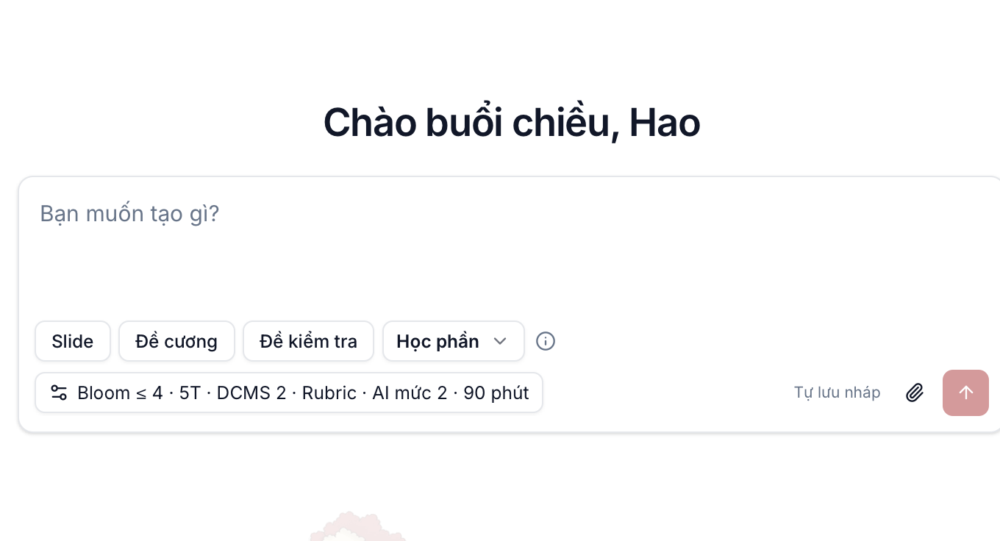
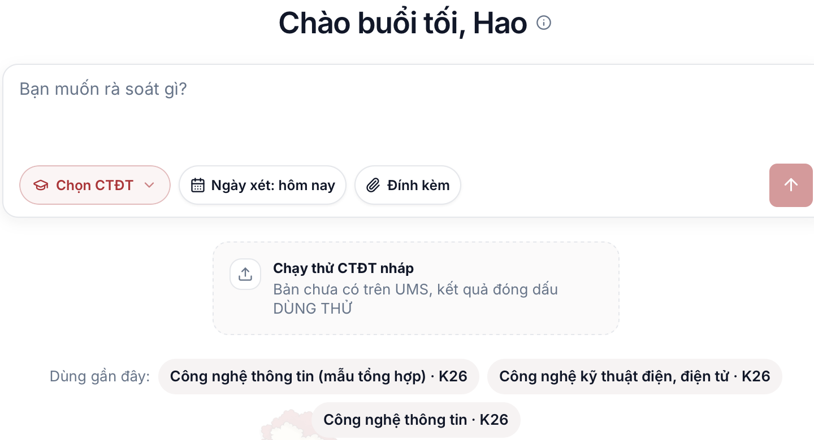

Chuyển đổi số trong giáo dục tại DAU
Towards a human-centered AI-native university
Hướng tới đại học AI-native lấy con người làm trung tâm
Director, CAIRA · Giám đốc CAIRA
Delegation from Siam Computer and Language Minburi, Thailand
Room 212 · 19 November 2026
About the speaker · Người trình bày
CAIRA tự xây dựng hệ thống dữ liệu và AI của chính DAU
Director of CAIRA, Danang Architecture University
Giám đốc CAIRA, Trường Đại học Kiến trúc Đà Nẵng
A center for innovation & research and development of advanced technology.
Trung tâm đổi mới sáng tạo và nghiên cứu, phát triển công nghệ tiên tiến.
The data foundation for an AI-native university, from admissions to tuition fees.
Hệ thống Quản lý Đại học: nền dữ liệu cho đại học AI-native, từ tuyển sinh đến học phí.
CourseForge drafts teaching materials to school standards; CurriculumTwin reviews degree programs.
CourseForge soạn học liệu theo chuẩn Trường; CurriculumTwin rà soát chương trình đào tạo.
CAIRA owns the source code, the data and the upgrade roadmap, in line with the 2026–2031 strategy.
CAIRA làm chủ mã nguồn, dữ liệu và lộ trình nâng cấp, gắn với chiến lược 2026–2031.
Why · Vì sao
Thêm chatbot vào LMS mới là AI-assisted, chưa phải AI-native
Công nghệ tái cấu trúc giáo dục
AI, big data, digital twins and the green transition change how universities teach and govern.
Thị trường cần năng lực thật
Learners prove competence through work products and authentic evidence, not transcripts alone.
Tự chủ và trách nhiệm giải trình
Higher education moves toward autonomy, accreditation and transparency in quality.
Từ quy mô sang năng lực
The focus shifts from institutional size to capability, data, quality and innovation.
Tiếp tục phát triển rời rạc
Each office its own software, each program its own outcome matrix, evidence gathered by hand every accreditation cycle. The result: data islands.
Mỗi phòng một phần mềm, mỗi chương trình một ma trận, mỗi kỳ kiểm định gom minh chứng thủ công. Kết quả: những ốc đảo dữ liệu.
Tích hợp thành một hệ sinh thái AI-native
Learning outcomes are the backbone, demonstrated competence is the goal, data are the infrastructure, AI supports action. People make the decisions.
Chuẩn đầu ra là xương sống, năng lực thực chứng là mục tiêu, dữ liệu là hạ tầng, AI hỗ trợ hành động. Con người quyết định.
The model · Mô hình
Một thiết kế tích hợp chín lớp, không phải các công cụ rời rạc
Click a layer, or let it cycle · Bấm chọn lớp, hoặc để tự chuyển
Copilots
Bốn Copilot lõi, mỗi Copilot có giới hạn ghi rõ
Gia sư AI
Supports learning based on the competency map, recommends practice and gives feedback.
Does not complete assignments on students' behalf.
Không làm bài thay sinh viên.
Copilot cho giảng viên
Supports course design, rubrics, learning materials and feedback to learners.
Does not override faculty members' academic judgment.
Không thay quyền chuyên môn của giảng viên.
Copilot hỗ trợ nghiên cứu
Supports literature reviews, data management and publication workflows.
Does not write papers on researchers' behalf or fabricate data.
Không viết bài thay, không bịa dữ liệu.
Copilot hỗ trợ quản trị
Supports workflows, reporting, quality monitoring and accreditation.
Does not decide on academic affairs, finance, personnel or accreditation.
Không tự quyết học vụ, tài chính, nhân sự, kiểm định.
All four share the Second Brain, Knowledge Graph, OBE/CBE Core and Data and AI Governance. Cả bốn dùng chung Second Brain, Knowledge Graph, lõi OBE/CBE và quản trị dữ liệu, AI.
Roadmap · Lộ trình
Năm cấp độ trưởng thành, đi từng bước tới năm 2031
AI embedded in core activities.
AI orchestrates workflows under human oversight.
Data and AI built into the operating model by design.
Steering Committee, pilot programs, Second Brain v1
Ban Chỉ đạo, chọn CTĐT thí điểm
Pilot OBE/CBE Core and Competency Map; data and AI policies
Thí điểm lõi OBE/CBE, chính sách dữ liệu và AI
Pilot AI Tutor, Faculty and Research Copilots; Living Portfolio
Thí điểm ba Copilot, hồ sơ năng lực sống
Expand Agentic AI; digital twins; continuous accreditation readiness
Mở rộng Agentic AI, bản sao số, kiểm định sống
Multi-agent ecosystem and a university-wide digital twin
Hệ đa tác nhân, bản sao số toàn trường
CAIRA product · Sản phẩm CAIRA · UMS
UMS: làm một luồng chạy thật từ đầu đến cuối trước, mở rộng sau
Money trackTrục tiền
Academic trackTrục học thuật
Core rule: no student ID is issued until Finance confirms payment. Each admitted applicant has exactly one student record.
Nguyên tắc cốt lõi: chưa có xác nhận thu tiền thì chưa cấp mã sinh viên. Mỗi thí sinh trúng tuyển chỉ có một hồ sơ.
Clean data first, AI second: AI answers correctly only when the bottom layer holds correct data.
Dữ liệu sạch trước, AI sau: AI chỉ trả lời đúng khi tầng dưới cùng có dữ liệu đúng.
CAIRA product · Sản phẩm CAIRA · DAU Faculty Copilot
DAU Faculty Copilot hiện nay: CourseForge và CurriculumTwin · đang ở giai đoạn thử nghiệm


AI-resistant assessment · Đánh giá kháng AI
Không cấm AI: sinh viên phải chứng minh quá trình của chính mình
Weekly: main decisions, discarded options, reasons for changes.
Nhật ký quá trình theo tuần
Feedback from faculty, peers, committees and how the work was revised.
Nhật ký góp ý và cách sửa
Sketches, drawings, models, process photos; never only the final version.
Lưu các phiên bản, không chỉ bản cuối
Tool, purpose, stage, how the output was verified and transformed.
Khai báo dùng AI
Explain the scheme and answer unexpected questions; no reading AI text.
Bảo vệ trực tiếp, trả lời câu hỏi bất ngờ
What was learned, hard decisions, trade-offs, next improvements.
Phản tư: điều đã học, đánh đổi
| Permitted support · Được phép | Boundary not to be crossed · Không được vượt | |
|---|---|---|
| AI Tutor | Explains the rubric, flags missing evidence, practises the defense with open questions.Giải thích rubric, nhắc minh chứng thiếu, luyện bảo vệ bằng câu hỏi gợi mở. | Does not produce the scheme, draw for students, write the defense, or grade.Không làm phương án, không vẽ thay, không viết bài bảo vệ, không chấm điểm. |
| Faculty Copilot | Checks missing evidence, flags level discrepancies, drafts feedback, supports CQI.Kiểm minh chứng thiếu, cảnh báo lệch mức, tổng hợp nhận xét, hỗ trợ CQI. | Does not grade, conclude that cheating occurred, or change grades.Không chấm thay hội đồng, không kết luận gian lận, không sửa điểm. |
Cooperation · Hợp tác
Các hướng có thể hợp tác với Siam Computer and Language Minburi
Tham quan, học kỳ ngắn
Short programs for learners: campus visits, digital design and AI workshops in Da Nang.
Chương trình ngắn cho học viên tại Đà Nẵng
Năng lực AI cho giáo viên
Joint workshops on teaching and assessing when learners use AI, including AI-use disclosure.
Workshop chung về dạy và đánh giá khi người học dùng AI
Giao lưu ngôn ngữ, văn hoá
Online buddy sessions in English, with Vietnamese and Thai, between our students.
Giao lưu trực tuyến bằng tiếng Anh, Việt, Thái
Lộ trình học tiếp
Explore pathways for Siam learners into DAU programs such as IT and graphic design.
Tìm hiểu lộ trình học tiếp ngành CNTT, thiết kế đồ họa tại DAU
Xin cảm ơn quý vị. Mời đặt câu hỏi.